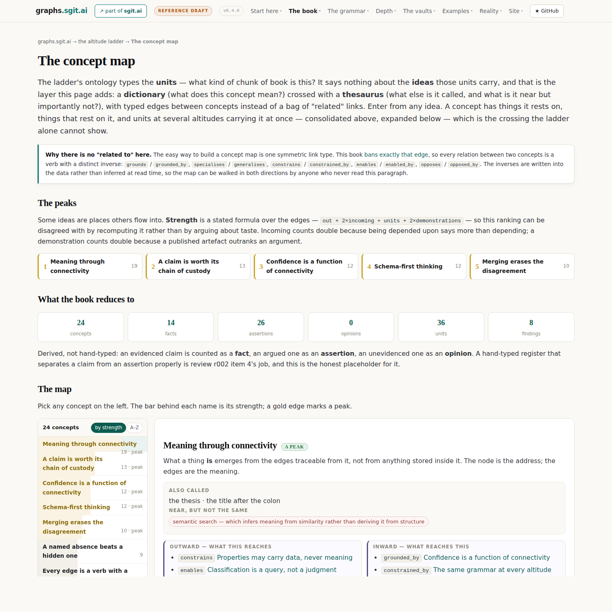
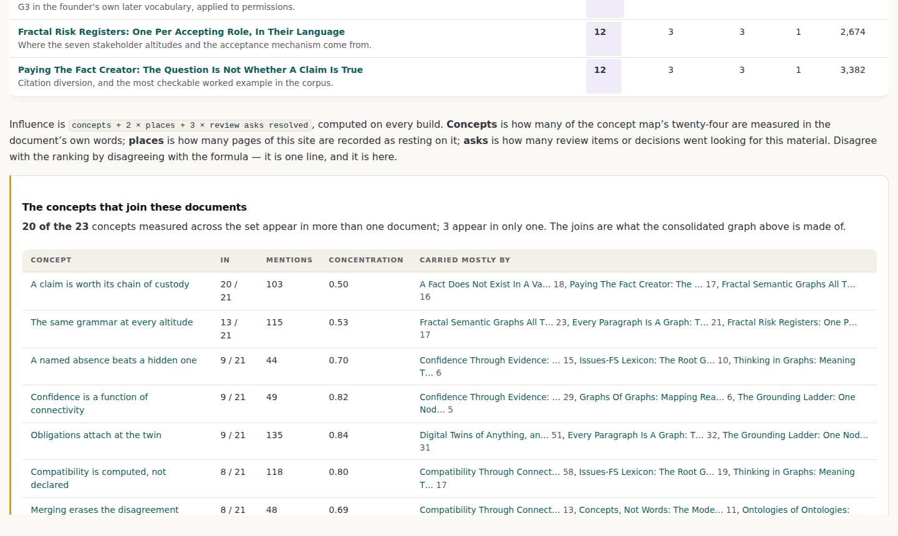
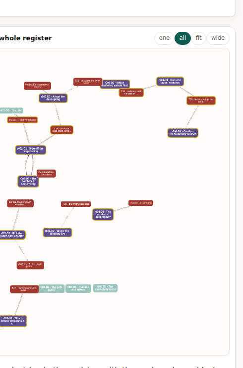

The concepts, and what the evidence says about them
The vocabulary this book is being built out of, what the twenty-one carried source documents actually say about it, where the material contradicts itself, and what is still unanswered. Assembled in one sequence so that none of it depends on clicking through a website.
How to read this
Seven sections, in a fixed order, and the order is the argument: the vocabulary first, then which of it the corpus actually carries, then what the material disagrees with itself about, then what is unanswered. Nothing here needs a link followed. Every table stands alone and every figure has a caption that carries its point.
What you are being asked to decide is at the end, numbered. The short version: is this the vocabulary of the book you intend to write? Everything else in this pack exists to make that question answerable.
1. The vocabulary
24 concepts, each with a definition, what it is also called, and what it is near but importantly not. That last column is the one that does the work: a definition says what a thing is, and a near-but-not says which neighbouring idea a reader will otherwise substitute for it.

Meaning through connectivity peak strength 19
What a thing is emerges from the edges traceable from it, not from anything stored inside it. The node is the address; the edges are the meaning.
Also called: the thesis, the title after the colon
Near but not: semantic search — which infers meaning from similarity rather than deriving it from structure
A claim is worth its chain of custody peak strength 13
Claim, graph node, file, commit, official source with the hash of the retrieved bytes. Every link walkable by a reader who holds nothing privileged.
Also called: chain of custody, end-to-end provenance
Near but not: a citation list — which names sources without making them checkable
Confidence is a function of connectivity peak strength 12
How much a claim can be trusted is computable from how richly it is connected: no edges, local edges, typed definitions, anchor nodes, external references, rich multi-hop paths.
Also called: the confidence ladder
Near but not: probability — the ladder is not a likelihood, it is a reachability measure
Schema-first thinking peak strength 12
Deciding in advance what types exist and requiring everything to conform, so that meaning is attached to nodes rather than derived from edges. The position this book takes a stand against.
Also called: conform-first, the Semantic Web's practical mistake
Near but not: having a schema at all — the objection is to the direction of authority, not to structure
Merging erases the disagreement peak strength 10
Two parties' vocabularies are kept intact and bridged, because the disagreement between them is usually the most valuable thing present. Three layers: shared facts owned by nobody, per-party formulas, declared bridges.
Also called: keep both senses, divergence as output
Near but not: translation — which produces one text where there were two positions
A named absence beats a hidden one strength 9
Three of ten pieces of evidence is information. An absence that is stated can be queried, assigned and closed; an absence that is hidden silently supports whatever rests on it.
Also called: honest uncertainty, the ghosted node
Near but not: a missing value — which is the absence of a record, not a recorded absence
Classification is a query, not a judgment strength 9
A node type is a formula over paths: a Vulnerability is a Fact with an upward gives_rise_to path to a Risk. Judgment does not disappear; it moves out of a head and into something visible, versioned and arguable.
Also called: node type formulas, the content does not decide the type, the paths do
Near but not: tagging — which records a judgment instead of computing one
Every edge is a verb with a distinct inverse strength 9
An edge is named as a verb, and its inverse is a different verb rather than the same edge walked backwards: owned_by and owns have different fan-out, and that asymmetry is what bounds traversal.
Also called: the grammar rule, verb edges
Near but not: a labelled edge — a label is not yet a verb, and a verb without a distinct inverse is half an edge
Both directions carry a name strength 8
Because every edge names its inverse, a path can be walked and read in either direction, and the reading changes: down a grounds chain reaches assumptions, up it reaches consequences.
Also called: walk it both ways
Near but not: an undirected edge — which has no reading at all
Documents are projections of graphs strength 8
A page, a chapter, a PDF and a slide are renderings of one underlying structure. Change the structure and every projection follows; change a projection and you have created a fork.
Also called: render, do not author twice
Near but not: export — which copies a document rather than deriving it
Supersede, never delete strength 8
A corrected claim is marked from a date and kept, because removing it destroys the record of what was resting on it. The question a correction must be able to ask is: what rested on this?
Also called: mark it, keep it
Near but not: versioning — which keeps the old text without keeping what depended on it
The file system is the source of truth strength 8
Query engines are loaded on demand over files and thrown away. There is no live database anywhere, and that is an architectural position rather than a purity claim: an engine with no state of its own cannot drift.
Also called: no live databases, the browser is the database
Near but not: no databases at all — the corrected claim is narrower and stronger
Compatibility is computed, not declared strength 7
Whether two things can work together is a spectrum, asymmetric and purpose-relative, computed from the edges — not a boolean somebody asserts in a standard.
Also called: a spectrum, not a boolean
Near but not: conformance testing — which asks whether one thing matches a fixed target
Enrichment, not enforcement strength 7
When confidence is low the remedy is adding edges, never adding rules. The graph grows; it does not constrain.
Also called: the graph grows, it doesn't constrain
Near but not: validation — which is enforcement wearing a helpful name
Join at the node layer, never document to document strength 7
To connect two bodies of text, lift both into typed nodes first and join at an intermediate layer. A document-to-document link is only as good as the sentence somebody wrote around it.
Also called: node-to-node, the junction
Near but not: a citation — which points at a document and stops
A node alone means nothing strength 6
A label is not a meaning. A node with no edges cannot be distinguished from any other node carrying the same label, so it carries no information at all.
Also called: a node is just a node
Near but not: an empty node — which has a type and a place, and is therefore not the same thing
A path must read as a sentence strength 6
If a traversal does not read as natural language in the reader's own tongue, the edges are wrong. The test is linguistic because the failure is semantic.
Also called: the sentence test
Near but not: a readable label — the test is over a whole path, not one edge
Never render the whole graph strength 6
You render the result of a query, never the graph itself. Build wide, find the few, then flip. A rendered graph past a few hundred nodes is a picture of nothing.
Also called: build wide, find the few, flip
Near but not: filtering — which hides what it does not show; a query states what it asked
Obligations attach at the twin strength 6
A duty binds the running instance and its telemetry, not the paragraph in the register beside it. The graph attaches the obligation where it actually bites.
Also called: attach at the instance
Near but not: a control mapping — which attaches to a document about the thing
The generic association edge is banned strength 6
relates-to
Also called: no relates-to
Near but not: a weak edge — which still says something, where a generic edge says nothing
The same grammar at every altitude strength 6
One grammar, one validator, one provenance rule at every level of zoom: expand any node and the thing inside obeys identical rules. Stated as falsifiable, not as a metaphor.
Also called: fractal semantic graphs, graphs of graphs of graphs, G3
Near but not: self-similar visuals — the claim is about rules, not about how the picture looks
Properties may carry data, never meaning strength 5
A property may hold a timestamp. It may not hold the answer to *what kind of thing is this?*, because that answer is a query over edges.
Also called: properties are just words
Near but not: property graphs — which are a storage model, not the objection
Reference without authority strength 5
A shared vocabulary node others may link to, rather than a definition they must conform to. Interoperability without conformity; partial mapping is normal.
Also called: the lexicon, bridge nodes
Near but not: a canonical model — which is an anchor that acquired authority
Two identities for one thing strength 5
A positional identity that survives renumbering and a content identity that moves with the wording, so a citation can outlive an amendment without pretending the text is unchanged.
Also called: positional hash and content hash
Near but not: a version number — one identity trying to do two jobs
2. The peaks, and the formula that found them
These were computed, not chosen. Disagree by disagreeing with the formula, which is one line and is printed here so it can be argued with:
strength = outward edges + 2 × inward edges + units carrying it + 2 × published demonstrations
| Concept | Strength | Why it scores |
|---|---|---|
| Meaning through connectivity | 19 | 5 out, 3 in, 6 units, 0 demonstrations |
| A claim is worth its chain of custody | 13 | 2 out, 3 in, 3 units, 0 demonstrations |
| Confidence is a function of connectivity | 12 | 4 out, 2 in, 4 units, 0 demonstrations |
| Schema-first thinking | 12 | 1 out, 4 in, 3 units, 0 demonstrations |
| Merging erases the disagreement | 10 | 2 out, 1 in, 4 units, 0 demonstrations |
One peak is uncomfortable and is kept. Schema-first thinking is the position this book exists to argue against, and it scores as one of the strongest nodes, because five separate concepts define themselves partly by opposing it. It was not tuned away. The caution it carries: a strongly connected node is not a well-supported one, and any ranking that conflates connectivity with evidence will overstate whatever the book repeats most often.
3. What the corpus actually carries
21 source documents, 63,038 words, carried byte for byte with their hashes. Each was measured against the vocabulary mechanically: every concept declares a phrase list, the build counts occurrences, and the phrase list is published so the measurement can be disputed. 23 of the 24 concepts appear at all.

Concentration: breadth of mention is not weight
A concept mentioned in every document is not the same as a concept carried by every document. Concentration is the share of a concept's total mentions sitting in its top three documents. High means a couple of documents do the work and the rest allude to it.
| Concept | In | Mentions | Conc. | Carried mostly by |
|---|---|---|---|---|
| A claim is worth its chain of custody | 20/21 | 103 | 0.50 | a-fact-in-a-vacuum (18), paying-the-fact-creator (17), fractal-semantic-graphs (16) |
| The same grammar at every altitude | 13/21 | 115 | 0.53 | fractal-semantic-graphs (23), every-paragraph-is-a-graph (21), fractal-risk-registers (17) |
| A named absence beats a hidden one | 9/21 | 44 | 0.70 | confidence-through-evidence (15), issues-fs-lexicon (10), thinking-in-graphs (6) |
| Confidence is a function of connectivity | 9/21 | 49 | 0.82 | confidence-through-evidence (29), graphs-of-graphs (6), the-grounding-ladder (5) |
| Obligations attach at the twin | 9/21 | 135 | 0.84 | digital-twins-of-anything (51), every-paragraph-is-a-graph (32), the-grounding-ladder (31) |
| Compatibility is computed, not declared | 8/21 | 118 | 0.80 | compatibility-through-connectivity (58), issues-fs-lexicon (19), thinking-in-graphs (17) |
| Merging erases the disagreement | 8/21 | 48 | 0.69 | compatibility-through-connectivity (13), concepts-not-words (11), ontologies-of-ontologies (9) |
| Both directions carry a name | 7/21 | 35 | 0.80 | directed-edges-query-paths (21), the-grounding-ladder (4), avoid-the-blob (3) |
| Meaning through connectivity | 7/21 | 22 | 0.68 | thinking-in-graphs (6), compatibility-through-connectivity (5), digital-twins-of-anything (4) |
| Reference without authority | 7/21 | 226 | 0.94 | issues-fs-lexicon (157), thinking-in-graphs (47), compatibility-through-connectivity (8) |
| The file system is the source of truth | 6/21 | 63 | 0.94 | the-browser-is-the-database (49), fractal-semantic-graphs (8), every-paragraph-is-a-graph (2) |
| Enrichment, not enforcement | 5/21 | 17 | 0.82 | a-fact-in-a-vacuum (7), thinking-in-graphs (4), avoid-the-blob (3) |
Only two concepts come in under 0.55. The most distributed is A claim is worth its chain of custody at 0.50. Everything else sits above 0.7, which is the caution to carry into any claim that the corpus is "about" a given idea.
4. What the first edition reduces to
| Kind | Count |
|---|---|
| Facts, meaning claims with resolving evidence | 14 |
| Assertions, meaning claims argued but not evidenced | 26 |
| Opinions, meaning claims stated as preference | 0 |
| Measured cross-references between chapters | 42 |
Derived, not hand-typed: an evidenced claim is counted as a fact, an argued one as an assertion, an unevidenced one as an opinion. A hand-typed register that separates a claim from an assertion properly is review r002 item 4's job, and this is the honest placeholder for it.
5. Where the material disagrees with itself
8 findings, 3 still open. A finding is not a defect to be tidied away: a contradiction can be correct in context, and the point of making them detectable is that they can then be argued about rather than discovered by a reader.
The book says both that there is no query engine and that there is one open · contradiction
At level 3 the paragraph for chapter 12 ("no graph database, no browser SPARQL or Cypher, no RDF in the code") sits four units from the paragraph for chapter 7 ("eleven views including a SQLite interface, an RDF/Turtle export and a graph REPL"). Both sentences are true — one describes the codebase, the other describes a published vault — but compressed onto one page they read as a contradiction, and a reader of the full book meets them forty pages apart.
Accepted because: A correction is proposed and awaits agreement; until the wording lands, a reader can still meet both sentences and believe the book contradicts itself.
The Semantic Web's mistake is stated twice, in two parts accepted · repeat
Chapter 1 carries the mistake in one paragraph with a pointer to the full treatment; chapter 5's first section is the full treatment. At level 3 the two paragraphs say nearly the same sentence. Climbing to level 2 forced a choice, and Part III took it — which means Part I's own summary leans on a claim that Part III owns.
Accepted because: Deliberate altitude repetition, signposted in the text: chapter 1 states it and points at chapter 5 for the argument. Repetition across altitudes is the book's design, not a defect, and removing it would make chapter 1 incomplete for a reader who stops there.
Five ideas, from a source that lists ten principles open · compression-loss
Climbing from level 4 to level 3 in chapter 2 loses nothing, because the chapter only ever had five. The loss happened below level 5, between the foundational source document and the book: the source's summary lists ten core principles. Three of the missing five are still present in this chapter's prose without being named as principles (compatibility computed not declared, honest uncertainty, enrichment not enforcement); two are absent (cross-graph edges as first-class, no node aware of how it is used).
Accepted because: The chapter audit has not run yet. Three of the missing five are present in the prose without being named as principles, which is a fixable gap rather than a disagreement.
Compressed honestly, the book's top paragraph has no room for "fractal" accepted · weight
Level 1 was built bottom-up from level 2, and fractal did not survive the climb: it holds six mentions in one chapter and one elsewhere, so it entered level 2 as a single clause inside Part III and was squeezed out at level 1. It appears in the level 1 graph as a claim, but not in the level 1 text.
Accepted because: Accepted with a condition rather than closed: the title decision was taken knowing this, and the fractal treatment grows in the v0.4.0 identity release. If v0.4.0 ships without the interior growing, this returns to open, because then the cover would promise what the text does not carry.
The position the book argues against is one of its strongest nodes accepted · concept
Adding the concept layer produced a ranking nobody chose: strength is a stated formula over the edges, and schema-first thinking — the thing this book exists to argue against — comes out among the peaks, level with confidence-is-a-function-of-connectivity. It earns that place honestly: five separate concepts define themselves partly by opposing it, so the edges genuinely converge there.
Accepted because: The metric is measuring connectivity, which is what it claims to measure. A book of arguments has its antagonist as a centre of gravity, and a strength score that hid that would be measuring agreement instead.
Compression does not just shorten, it re-classifies accepted · classification
Giving each level its own taxonomy was meant to be bookkeeping. It produced a result instead. The classes do not survive the climb: a section classed Rule at level 4 sits inside a chapter classed Prescription at level 3, inside a part classed Argument at level 2. Nothing inherits. And the vocabulary changes kind, not just granularity: at level 4 a unit is best described by what it does to the reader (definition, demonstration, rule, correction, signpost), while at level 2 it is best described by what kind of matter it is (argument, evidence, disclosure, apparatus). At level 1 the taxonomy collapses entirely, because a taxonomy of one unit is not a taxonomy.
Accepted because: A result rather than a defect. The classes are level-dependent by nature, and forcing one vocabulary across all levels would be the schema-first move this book argues against.
Two sibling sites publish the same graph with different numbers open · cross-estate
This book reports the issue tracker's own graph as 71 nodes and 141 edges in four places, adding "edges stored bidirectionally" in two of them. The Issues-FS site, published 22 August 2026, reports the same graph as 141 link entries across 71 nodes, for roughly 70 logical relationships, because a link is written to both endpoints by design: one link command produces two entries. Both estates measured the same repository and neither is careless. The gap is a convention: this book counts a directed verb as an edge, which is its own grammar's rule that an inverse is not the same edge walked backwards, while the sibling counts relationships and says so. A reader who counts relationships and a reader who counts entries will disagree by a factor of two.
Accepted because: Ask N15 is unanswered, and 141 does not divide cleanly into two-entry relationships, so neither convention can be adopted until the sibling estate explains the remainder.
A contradiction the book already narrates, which the method correctly does not flag as new accepted · control
Chapter 3 bans the generic association edge, then names the project's own live configuration shipping a relates-to pair with one edge instance using it. The ladder surfaces the tension; the book had already disclosed it deliberately, in the same chapter, with the reasoning.
Accepted because: Disclosed in the text where it occurs, with the reasoning. It is kept as the control case that shows the method distinguishes a hidden contradiction from a stated one.
6. What the build checks on every release
Five rules, each stating itself. A check with zero hits is kept, because a rule with no hits is still a rule.
strong-but-unshown 2 hits
concept where strength >= 10 AND demonstrated_by is empty
Connectivity and evidence are independent axes. A concept can be central to the argument and carry nothing but argument, which is not a fault in the concept — it is a fact about where the evidence programme should go next.
units-under-two-findings 6 hits
unit referenced by more than one finding
Two findings on one unit is the signal a list of findings cannot give you. It usually means the unit is doing too many jobs at once.
nothing-rests-on-it 3 hits
concept with zero inward edges
A leaf idea is not a weak one: some concepts are terminal by nature. But a leaf that the book treats as foundational is either mis-modelled or under-connected, and this is the list to read with that question in mind.
text-with-no-concept 9 hits
level 3 or 4 unit carried by no concept
Not a defect in the text: it means the concept layer has not reached there yet. It is the honest to-do list for extending the concept map, and it shrinks as the map grows.
opposition-in-one-place 2 hits
two concepts joined by an opposes edge that both appear in the same unit
Usually deliberate and usually good: that is where an argument is made. Worth watching because it is also where a reader is most likely to leave with the wrong half.
7. What is unanswered
10 of 14 decisions are open. Each is the peak of its own small graph: the options below it, the cost of each option below that, and the work it blocks out to the side.

r001-D2 · Sign off the sequencing
Sign off the sequencing, as reshaped by review r003: the evidence programme (vault case studies at full site granularity) runs first; the identity release (title, lineage and fractal chapters) follows, distilling from that evidence; the no-dependency corrections land as agreed along the way; the chapter audit runs throughout.
| Option | What it does | What it costs |
|---|---|---|
| Sign off as reshaped proposed | Evidence programme first, identity release after, corrections along the way, chapter audit throughout. | The cover says one thing and the published book says another for longer. |
| Adjust the order | Name what moves and the rest re-plans around it. | Anything moved ahead of the evidence programme has to be written from argument rather than from artefacts. |
r002-D2 · Pick the graph pilot chapter
The pilot chapter for the book-as-graph: chapter 5 (Against schema-first) as proposed, or another chapter?
| Option | What it does | What it costs |
|---|---|---|
| Chapter 5, Against schema-first proposed | Claim-dense, evidence-thin: the ghosts will show. | It is also the chapter most likely to change in the identity release. |
| Another chapter | Name it and the pilot moves. | A well-evidenced chapter flatters the pilot and teaches less. |
r002-D3 · The combined sequencing
The combined sequencing, jointly with r001's decision D2 and as reshaped by review r003: standalone wins first (footnotes, toolbox, the database correction), the evidence programme (vault case studies) next, then the identity release, then the graph pilot and chapter visualisations.
| Option | What it does | What it costs |
|---|---|---|
| Sign off as reshaped proposed | Matches r001 D2. | None |
| Adjust | Say what moves. | None |
r003-D1 · Adopt the decoupling
Adopt the decoupling as specified? The book gets its own markdown source tree, seeded from today's seventeen units so the split starts at zero drift, and the build gate flips from equality (book must match the site) to provenance (every book unit must name the site pages, version and commit it distilled from, with drift reported rather than forbidden).
| Option | What it does | What it costs |
|---|---|---|
| Adopt as proposed proposed | The book gets its own source tree seeded at zero drift; the gate flips from equality to provenance, so every book unit names the pages, version and commit it distilled from, and drift is reported rather than forbidden. | One release of pipeline work before any new writing, and provenance blocks to maintain from then on. |
| Adjust the architecture | Same split, different mechanism — say what changes. | Any weaker gate risks silent drift, which is the failure the current gate exists to stop. |
| Keep the coupling for now | Nothing changes; the site stays constrained by what the book can carry. | The vault programme either duplicates the estate or stays thin about it. |
r003-D2 · Which issues logic runs a review folder
Which issues logic manages a review's folder: in-repo issues in the IssuesFS pattern (issues as files, states as data, the graph computable from the folder), or GitHub issues? The agent recommends in-repo: it keeps the serverless-pull-request property this workflow is named for, and it dogfoods the very case study r001 item 8 wants written.
| Option | What it does | What it costs |
|---|---|---|
| In-repo issues, the IssuesFS pattern proposed | Issues as files, states as data, the graph computable from the folder. | No notifications: somebody has to look. |
| GitHub issues | Notifications and a familiar interface. | The serverless-pull-request property is lost, and the record leaves the artefact. |
| Both | In-repo as the record, GitHub mirrored for notification. | Two places to keep in step, which is the drift problem this project keeps writing about. |
r004-D1 · Does the ladder continue
Does the experiment continue? Three ways to take it: stop (the ladder stays as a published experiment, and the book carries on as it is); finish the pilot (take level 4 across all seventeen units, keeping the graph layer where it is); or adopt (the ladder becomes part of the build, authored in content/altitudes/, gate-checked like the book, with level 4 complete and the graph layer lifted everywhere). The agent recommends finishing the pilot first: the sharpest findings came from level 3 and the two drilled chapters, and the cost of the next twelve chapters is now measurable rather than guessed.
| Option | What it does | What it costs |
|---|---|---|
| Finish the pilot: level 4 for all seventeen units proposed | Completes the ladder at its most productive altitude. | The largest single writing task open. |
| Adopt into the build | The ladder is authored in content/, gate-checked like the book. | Gate-checking a thing that is still changing shape slows both. |
| Stop here | The ladder stays a published experiment. | The concept layer and the checks keep working; only the level 4 coverage stalls. |
r004-D2 · Where the findings live
The findings need a home. Do repeats and contradictions become a standing register (a page like the reviews register, where each finding has a state and is closed by a release), or do they stay a per-run output of the ladder, regenerated and re-read each time? The agent recommends the standing register: a contradiction that is found, forgotten and re-found is not a finding, it is a treadmill.
| Option | What it does | What it costs |
|---|---|---|
| A standing register with its own page proposed | Findings get stable ids that a release can close, like the comms board's tasks. | Another register to keep current. |
| Leave it as it is | The ladder page carries findings and checks together. | A finding cannot be cited by id from outside the page. |
r004-D3 · Which audience variant first
Which audience variant is worth building first, once the ladder is stable: a business projection of level 2, a graph-literate projection of level 3, or a non-English projection of level 2 (the translation case, which tests whether the graph really is what survives)? Each is one re-projection from the same graph, not a new book.
| Option | What it does | What it costs |
|---|---|---|
| Business, from level 2 | Cheapest, and the most likely to be asked for. | None |
| Graph-literate, from level 3 | Tests whether the vocabulary can go up rather than down. | None |
| A non-English projection of level 2 proposed | The strongest test of the claim: if the argument changes, that is a finding about the graph. | None |
| None yet | Stabilise the ladder first. | None |
r004-D4 · Confirm the taxonomy classes
The per-level ontologies and taxonomies are authored by the agent and are a first pass: the classes are defensible but not confirmed, and the author is the oracle for a classification of their own book. Confirm them, or correct the classes that are wrong? The most arguable calls: chapter 4 (the edge set) is classed Prescription rather than Apparatus; the Introduction is classed Argument rather than Signpost; and level 4's class vocabulary is about what a section does to the reader, which is a different kind of scheme from every level above it.
| Option | What it does | What it costs |
|---|---|---|
| Confirm as authored proposed | The classes stand and the level 4 rollout uses them. | None |
| Correct specific classes | Name them and the data changes with the next build. | None |
| Rework a level's vocabulary | The largest change: a level's classes are replaced wholesale. | None |
r004-D5 · The vendored dependency
This site now carries its first vendored third-party dependency (Cytoscape.js 3.30.2, MIT, 373 KB, committed at /assets/vendor/). Everything else here is hand-written with no runtime dependencies, and that has been a stated property. Keep it (a real graph library earns its place for a real graph), replace it with a hand-written layout to preserve the no-dependency claim, or keep it and state the exception explicitly in the engineering page and chapter 12's honesty table?
| Option | What it does | What it costs |
|---|---|---|
| Keep both and state the exception in the honesty table proposed | The claim becomes precise: no runtime dependency except two vendored libraries, named and versioned, plus a best-effort diagram renderer. | Chapter 12 grows a line, and the line is longer than it would have been in August. |
| Keep both, no further statement | Nothing changes. | A stated property with a silent exception, which is the failure mode this book names. |
| Replace Cytoscape with a hand-written layout, keep marked | The dependency list shrinks to a markdown parser, which is far easier to defend. | Weeks of work to reproduce a mature library, and a worse graph while it happens. |
What this pack is asking you to decide
Provenance
Every number in this pack was computed by the build that produced it, from the files listed on the cover with their SHA-256. Re-fetch any of them and hash it: if it disagrees with the cover, this pack is describing a different build and should be regenerated.
graphs.sgit.ai · v0.5.2 · 26 August 2026 · CC BY 4.0 ·
generated by admin/build/gen_packs.py.